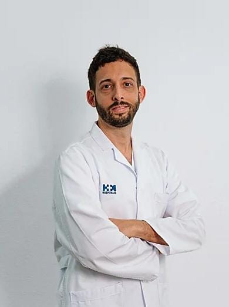

Hacia dónde seguir
Ocho líneas de trabajo que quedan abiertas, en dos frentes:
qué datos entran y cómo aprende el modelo.
Del aula a la consulta

Dr. Javier Díaz Santos Jefe del servicio de oncología
Hospital HM Santa Elena
Nuestro trabajo ahora mismo es exploratorio.
Se abren posibilidades a investigación y publicación científica desde el análisis de datos.
Posibilidad de replicar el modelo de análisis de FoundationOne por un coste mucho menor.
Panel genómico comercial
≈ 4.000 €
Objetivo planteado
300 – 600 €
Cifras estimadas por el Dr. Díaz Santos durante la entrevista.